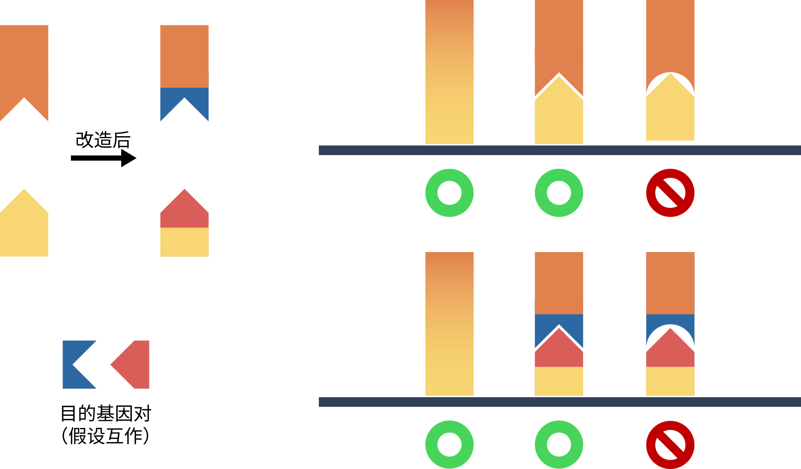

前言
我们有两个蛋白，但是我们不知道它们是否互作，为了研究他们是否互作，我们就不得不使用研究蛋白质-蛋白质互作的经典方法：酵母双杂交实验。
基础知识
让我们想一下一个基因转录时的流程：一个转录因子识别到 DNA 得启动子序列，开始募集其它因子进行转录。酵母双杂交实验的关键就是依赖一个转录因子：我们把这个转录因子拆分成两个部分，一部分负责识别 DNA 序列，另外一部份负责招募其它因子，理想情况下，这两个因子本身就应该相互连接作用启动转录。
而我们对它进行稍微改造：我们把这这两个部分的互作区域去掉，把自己需要研究的两个蛋白质挂上去，形成两个融合蛋白，如果我们研究的蛋白能互作，那么它们就能替代被我们原来替换掉的互作结构域从而启动转录。
在这个转录因子下游挂一个报告基因，如果这个转录因子能发挥作用，那么下游报告基因就能发生表达，从而来检测我们的蛋白能不能互作。

下游报告基因有很多种，例如 X-gel、GFP，但是为了方便起见，我们会选择一个氨基酸合成基因作为下游报告基因，如果这个基因不能被转录因子启动，那么该氨基酸缺陷型酵母就无法生长。